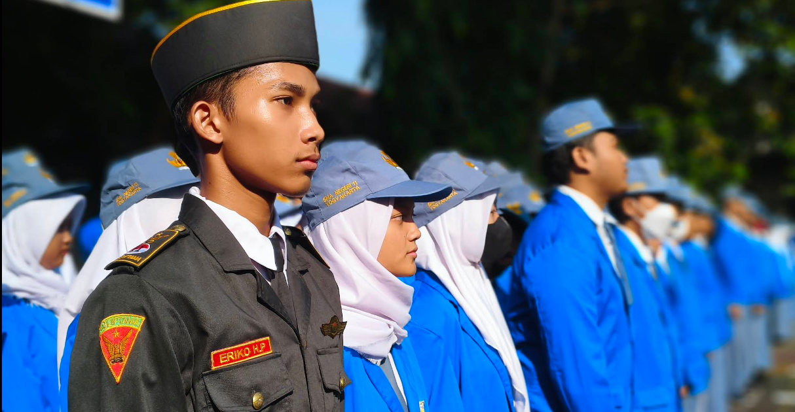
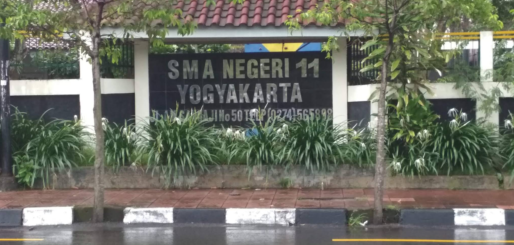

Sejarah Singkat
Gedung SMAN 11 Yogyakarta berdiri sejak tahun 1897. Pemerintah Belanda awalnya membangun tempat ini sebagai Kweekschool atau Sekolah Raja. Bangunan ini memiliki nilai sejarah yang sangat penting bagi Indonesia. Tokoh pergerakan nasional melaksanakan Kongres Boedi Oetomo pertama di aula gedung ini pada tanggal 3 hingga 5 Oktober 1908.
Pemerintah Indonesia menggunakan gedung ini untuk berbagai jenjang pendidikan guru setelah kemerdekaan. Tempat ini pernah menjadi Sekolah Guru Laki-laki, Sekolah Guru A, dan Sekolah Pendidikan Guru. Pemerintah secara resmi mengubah status sekolah ini menjadi SMA Negeri 11 Yogyakarta pada tahun 1989.
Visi dan Misi
Visi: Terwujudnya sekolah unggul yang memiliki intelektualitas, integritas, santun, berbudaya lingkungan, berwawasan kebangsaan, dan bercakrawala global.
Misi:
- Meningkatkan efektivitas kegiatan belajar mengajar.
- Meningkatkan disiplin seluruh warga sekolah.
- Meningkatkan sumber daya manusia melalui pelatihan berkelanjutan.
- Mewujudkan sekolah berbudaya lingkungan yang bersih dan sehat.
- Meningkatkan pembinaan prestasi akademik maupun non-akademik.


Lokasi dan Status Bangunan
Sekolah ini berlokasi di Jalan A.M. Sangaji Nomor 50, Jetis, Kota Yogyakarta. Pemerintah Provinsi Daerah Istimewa Yogyakarta menetapkan bangunan utama sekolah ini sebagai Bangunan Cagar Budaya. SMAN 11 Yogyakarta terus menjaga kelestarian sejarah sambil memberikan pendidikan modern bagi para siswa.